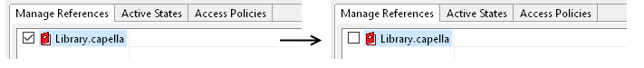
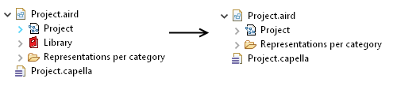
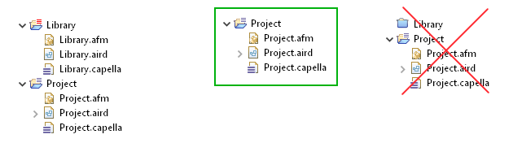
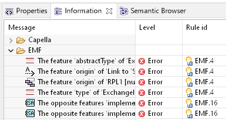
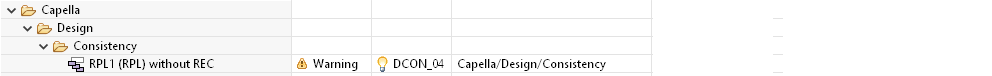

Notice that unreferencing a Library is a destructive operation where you will delete all uses of a Library in the given Project.
For instance, Components implementing Interfaces defined in a Library will not implement it afterwards, Exchange items on Library will no longer be referenced, or RPL on project will be detached from their REC in the Library (without easy way to reattach them afterwards).
Before doing this operation, it is advised to backup your project and referenced libraries
Right Click on the Project.aird then Libraries > Manage references
In this wizard, uncheck the Library and close the wizard

Save the Project
You shall notice that the Library disappear from the elements located under the Project.

Notice : Removal of the library reference in this wizard is only a first step and your project model elements are still referencing the library elements at this point.'''
Now, you can remove the Library from the Workspace. (The library must not be visible in the Project Explorer, not closed)

Close the Project Session and Reopen it. (or restart Capella)
Right Click on the Project.aird > Close, then Right Click on the Project.aird > Open Session
Right Click on the Root Model Element under Project.aird > Validate Model
This shall raises several errors called "EMF" detecting unresolved elements (EMF.4, EMF.16)

On one line for each kind of rules, do Right click > Quick fix all similar > Delete invalid references
If you redo a validation, you shall not see such 'EMF' errors anymore.
If you have used RPL in your project, you will also notice some warnings raised by the Capella/Design/Consistency/DCON_04 rule.
It is possible to transform the RPL to a REC by using the corresponding quickfix.

On the Project root model elements, refresh all diagrams
Then you can Save your project and use it without references to this library.